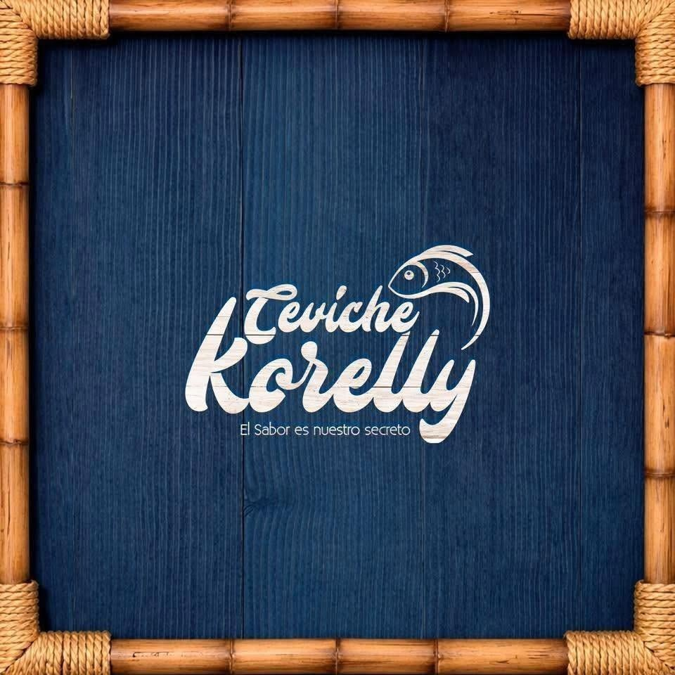

Horario de atención
Lunes a domingo
10:00 a. m. a 5:20 p. m.

Tradición familiar · Sabor piurano
El sabor es nuestro secreto
Conoce nuestra historiaNuestra esencia
En Cevichería Korelly celebramos la gastronomía marina con ingredientes frescos, sabor tradicional y una atención cercana. Somos una propuesta de origen familiar que busca crear momentos especiales alrededor de la mesa, sin perder sus raíces.
Lunes a domingo
10:00 a. m. a 5:20 p. m.
Urb. El Bosque Mz. U, lote 1
Castilla, Piura
La tradición y el sabor de la gastronomía marina.
Lo que nos guía
Ser una de las cevicherías más reconocidas de Piura, destacando por la calidad de nuestros platos marinos, nuestra tradición gastronómica y la satisfacción de nuestros clientes, creciendo como empresa sin perder nuestras raíces familiares.
Ofrecer experiencias gastronómicas a través de platos marinos preparados con ingredientes frescos, sabor tradicional y dedicación, brindando una atención amable y un ambiente agradable para compartir en familia y con amigos.
Mantenemos nuestras raíces y esencia gastronómica piurana.
Seleccionamos ingredientes frescos y ofrecemos buenos productos.
Trabajamos diariamente para satisfacer a nuestros clientes.
Ofrecemos productos y servicios transparentes.
Brindamos una atención amable y cercana.
Crecemos y superamos desafíos sin perder nuestra identidad familiar.
De un sueño familiar a una cevichería
Cevichería Korelly nació como un emprendimiento familiar impulsado por Leyla Calle Guerrero y su hijo Erick Alexandro Fungarache Calle. Con apenas S/ 500 y cuatro mesas debajo de un árbol, comenzaron a construir un proyecto basado en el esfuerzo, la perseverancia y el amor por la gastronomía.
El nombre Korelly guarda también un significado especial: nació como homenaje a Fiorella, hermana de Leyla. Así, la marca lleva consigo una historia de familia que sigue siendo parte de su identidad.
Cada paso de crecimiento conserva el espíritu con el que todo comenzó.
Su historia comenzó con aquel emprendimiento familiar. Para indicar sus años exactos de trayectoria, falta confirmar el año en que abrió sus puertas.
Estamos para recibirte
Ven a compartir el sabor de la tradición marina en un ambiente familiar.
Urb. El Bosque Mz. U, lote 1
Castilla, Piura
Lunes a domingo
10:00 a. m. – 5:20 p. m.
999 999 999 (dato hipotético)
contacto@korelly.com (dato hipotético)
Los datos de teléfono y correo son referenciales y deben reemplazarse por los oficiales.